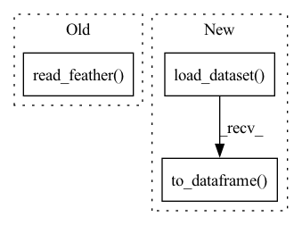

Pattern ID :12757
Before Change
df = df.reset_index(drop=True) // index is of type Int64Index
df.to_feather(fname)
else: // feather file already exists so load from it
df = pd.read_feather( fname)
df.columns = self.weather_station_data
df.index = pd.date_range("20010101 01:00:00", periods=len(df), freq="H")After Change
df = df.reset_index(drop=True) // index is of type Int64Index
df.to_xarray().to_netcdf(fname)
else: // feather file already exists so load from it
df = xr.load_dataset(fname).to_dataframe()
df.columns = self.weather_station_data
df.index = pd.date_range("20010101 01:00:00", periods=len(df), freq="H")In pattern: SUPERPATTERN
Frequency: 6
Non-data size: 3
Instances Fragment ID: 43231683
Project Name: atrcheema/dl4seq
Commit Name: 010fbe51c1ccf4305e1811558e8e0e2123274ac4
Time: 2021-08-30
Author: ather_abbas786@yahoo.com
File Name: ai4water/utils/datasets/datasets.py
M Class Name: MtropicsLaos
N Class Name: MtropicsLaos
M Method Name: fetch_weather_station_data(4)
N Method Name: fetch_weather_station_data(4)
M Parent Class: Datasets
N Parent Class: Datasets
M File Name: ai4water/utils/datasets/datasets.py
N File Name: ai4water/utils/datasets/datasets.py
M Start Line: 948
M End Line: 959
N Start Line: 967
N End Line: 978
Before Change
df.to_feather(fname)
else: // feather file already exists so load from it
df = pd.read_feather( fname)
df.index = pd.date_range("20010101", periods=len(df), freq="D")
return df[st:en]After Change
df.to_xarray().to_netcdf(fname)
else: // feather file already exists so load from it
df = xr.load_dataset(fname).to_dataframe()
df.index = pd.date_range("20010101", periods=len(df), freq="D")
return df[st:en] Fragment ID: 43231682
Project Name: atrcheema/ai4water
Commit Name: 010fbe51c1ccf4305e1811558e8e0e2123274ac4
Time: 2021-08-30
Author: ather_abbas786@yahoo.com
File Name: ai4water/utils/datasets/datasets.py
M Class Name: MtropicsLaos
N Class Name: MtropicsLaos
M Method Name: fetch_rain_gauges(3)
N Method Name: fetch_rain_gauges(3)
M Parent Class: Datasets
N Parent Class: Datasets
M File Name: ai4water/utils/datasets/datasets.py
N File Name: ai4water/utils/datasets/datasets.py
M Start Line: 914
M End Line: 926
N Start Line: 932
N End Line: 944
Before Change
df = df.reset_index(drop=True)
df.to_feather(fname)
else: // feather file already exists so load from it
df = pd.read_feather( fname)
df.index = pd.date_range("20010101 00:06:00", periods=len(df), freq="6min")
df.columns = ["pcp"]
After Change
df = df.reset_index(drop=True)
df.to_xarray().to_netcdf(fname)
else: // feather file already exists so load from it
df = xr.load_dataset(fname).to_dataframe()
df.index = pd.date_range("20010101 00:06:00", periods=len(df), freq="6min")
df.columns = ["pcp"]
Fragment ID: 43231680
Project Name: atrcheema/dl4seq
Commit Name: 010fbe51c1ccf4305e1811558e8e0e2123274ac4
Time: 2021-08-30
Author: ather_abbas786@yahoo.com
File Name: ai4water/utils/datasets/datasets.py
M Class Name: MtropicsLaos
N Class Name: MtropicsLaos
M Method Name: fetch_pcp(4)
N Method Name: fetch_pcp(4)
M Parent Class: Datasets
N Parent Class: Datasets
M File Name: ai4water/utils/datasets/datasets.py
N File Name: ai4water/utils/datasets/datasets.py
M Start Line: 984
M End Line: 996
N Start Line: 1003
N End Line: 1015